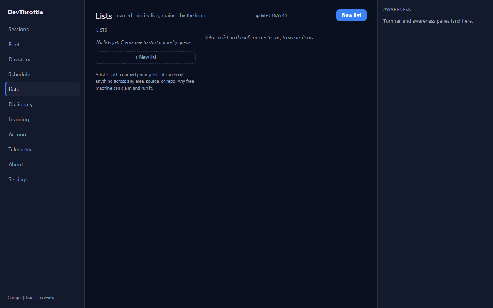
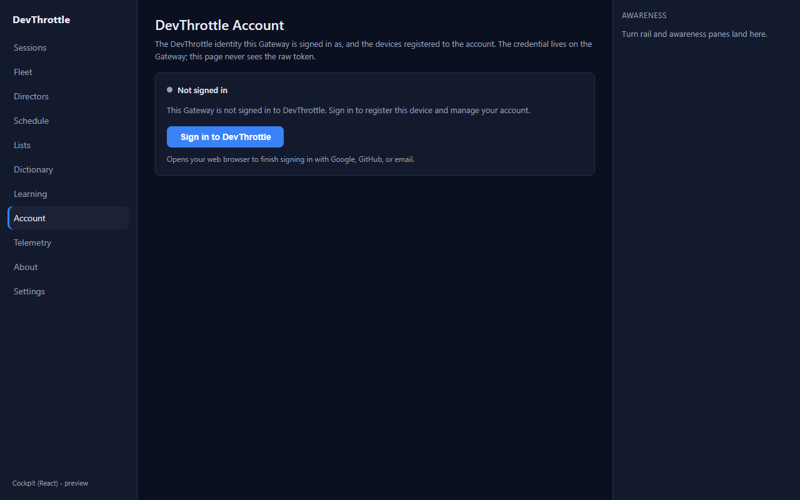
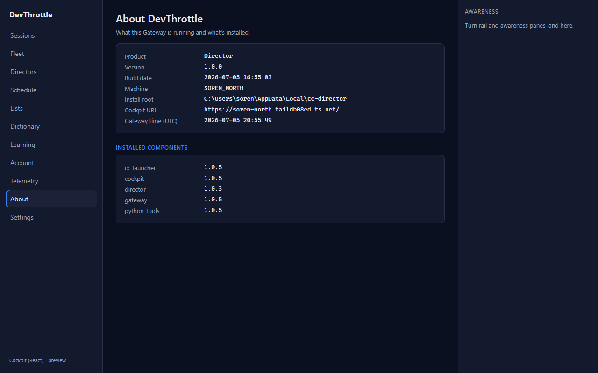

Issue: #979 (retire the Blazor Cockpit, serve React at root /) ·
PR: #1016 · Branch: issue-979-retire-blazor-cockpit
Accept: text/html) to every React
page path - including the regressed /lists - serves the React shell, while API/JSON clients
still get JSON from the same dual-use paths.
With the React Cockpit served at /, a hard navigation / reload / deep-link / bookmark /
new-tab open of /lists (a real browser GET with Accept: text/html) returned
200 application/json {"lists":[]} - the raw Work-List API - instead of the
React Lists page. In-app react-router navigation worked; only hard navigation bit.
Root cause: WorkListEndpoints maps MapGet("/lists"), which wins over
the SPA fallback. The dual-use browser-page allow-list
CockpitReactApp.BrowserPageRoots = { "cockpit", "sessions", "directors" } omitted
"lists", so IsBrowserPageRequest("/lists") was false and the JSON endpoint was
served to the browser. This regressed in the /c → / cutover: at
/c/lists the API path /lists did not collide with the page.
I audited every client-side React route in apps/cockpit/src/main.tsx against
every top-level single-segment MapGet JSON endpoint in the Gateway. A path is
"dual-use" only when it is BOTH a React page AND a Gateway JSON endpoint at the same path. The
complete intersection is exactly four roots:
| Dual-use root | Gateway JSON endpoint | React page | Status |
|---|---|---|---|
| cockpit | MapGet("/cockpit") | roster redirect | already present |
| sessions | MapGet("/sessions"), MapGet("/sessions/{sid}") | roster + detail | already present |
| directors | MapGet("/directors") | registry + detail | already present |
| lists | MapGet("/lists") | Lists page | ADDED (was the bug) |
Every other React page has no top-level single-segment JSON endpoint at its own path, so
it already falls through the whole REST surface to the SPA fallback and serves the shell. These are
deliberately NOT added, because adding them would wrongly shadow their nested API paths for a browser
(e.g. adding exes would divert a browser GET of /exes/list to the shell):
| React page | Its Gateway API surface | Why not in the allow-list |
|---|---|---|
| /fleet | (none) | no same-path JSON - SPA fallback serves it |
| /schedule | /cron/jobs | no /schedule JSON endpoint |
| /wingman | /wingman/queue (nested) | no bare /wingman JSON endpoint |
| /dictionary | /ingest/dictionary (nested) | no /dictionary JSON endpoint |
| /transcripts | /ingest/recordings (nested) | no /transcripts JSON endpoint |
| /exes | /exes/list (nested) | no bare /exes JSON endpoint |
| /learn | (none) | no same-path JSON |
| /telemetry | /gateway/telemetry-consent | no /telemetry JSON endpoint |
| /account | /account/status, /account/credits, /account/devices (nested) | no bare /account JSON endpoint |
| /about | /gateway/about | no /about JSON endpoint |
| /feedback | (none) | no same-path JSON |
| /session/{id} | (none - "sessions" is plural) | no /session JSON endpoint |
Code change: src/CcDirector.Gateway/Cockpit/CockpitReactApp.cs -
BrowserPageRoots is now { "cockpit", "sessions", "directors", "lists" }, with the
audit documented on the field. Tests:
src/CcDirector.Gateway.Tests/BrowserPageRoutesTests.cs - added /lists to the page,
policy, and wire theories, plus negative cases locking in that the nested API paths
(/exes/list, /account/status, /account/devices,
/wingman/queue) and non-dual-use pages are NOT over-broadened.
Stood up the real GatewayHost with the release-staged wwwroot/c React bundle and
drove the full matrix over HTTP. Every page path served the actual React shell
(200 text/html whose body is the Vite index.html); every dual-use
path still returned JSON to an API client.
== 1. Hard browser navigation (Accept: text/html) serves the React shell ==
[PASS] GET / (Accept: text/html) -> 200 text/html
[PASS] GET /lists (Accept: text/html) -> 200 text/html
[PASS] GET /dictionary (Accept: text/html) -> 200 text/html
[PASS] GET /transcripts (Accept: text/html) -> 200 text/html
[PASS] GET /exes (Accept: text/html) -> 200 text/html
[PASS] GET /learn (Accept: text/html) -> 200 text/html
[PASS] GET /schedule (Accept: text/html) -> 200 text/html
[PASS] GET /wingman (Accept: text/html) -> 200 text/html
[PASS] GET /telemetry (Accept: text/html) -> 200 text/html
[PASS] GET /account (Accept: text/html) -> 200 text/html
[PASS] GET /about (Accept: text/html) -> 200 text/html
[PASS] GET /feedback (Accept: text/html) -> 200 text/html
[PASS] GET /fleet (Accept: text/html) -> 200 text/html
[PASS] GET /directors (Accept: text/html) -> 200 text/html
[PASS] GET /sessions (Accept: text/html) -> 200 text/html
[PASS] GET /cockpit (Accept: text/html) -> 200 text/html
[PASS] GET /session/abc123 (Accept: text/html) -> 200 text/html
[PASS] GET /sessions/abc123 (Accept: text/html) -> 200 text/html
[PASS] GET /directors/abc123 (Accept: text/html) -> 200 text/html
[PASS] GET /cockpit/abc123 (Accept: text/html) -> 200 text/html
== 2. Dual-use paths still return JSON to API clients (no text/html) ==
[PASS] GET /lists (Accept: application/json) -> 200 application/json {"lists":[]}
[PASS] GET /sessions (Accept: application/json) -> 200 application/json []
[PASS] GET /directors (Accept: application/json) -> 200 application/json []
[PASS] GET /cockpit (Accept: application/json) -> 200 application/json {"url":"https://...}
== 3. Nested API paths under non-dual-use pages stay JSON even for a browser (Accept: text/html) ==
[PASS] GET /exes/list (Accept: text/html) stays API -> 200 application/json
[PASS] GET /account/status (Accept: text/html) stays API -> 200 application/json
[PASS] GET /account/credits (Accept: text/html) stays API -> 200 application/json
[PASS] GET /wingman/queue (Accept: text/html) stays API -> 200 application/json
== 4. Three-segment API subpaths stay JSON even for a browser ==
[PASS] GET /sessions/abc/turnbriefs (Accept: text/html) stays API -> 400 application/json
[PASS] GET /directors/abc/repos (Accept: text/html) stays API -> 404 application/json
RESULT: 30 passed, 0 failed.
A deep-link to /lists now renders the full React Lists page (left rail, header
"named priority lists, drained by the loop", New list button, awareness pane) - not raw
{"lists":[]} JSON. Compare with the QA bounce screenshot
../qa/page-lists.png which showed the raw JSON.

Account and About deep-links (audited non-dual-use pages) also render the shell correctly:


| Gate | Result |
|---|---|
cockpit npm run build --workspace @devthrottle/cockpit | OK - 103 modules, root-relative /assets |
root npm run lint (eslint ingress rule) | OK - 0 errors |
Gateway dotnet build -p:RunCockpitBuild=true | OK - staged wwwroot/c (index.html + assets) |
dotnet build cc-director.sln | OK - 0 warnings, 0 errors |
dotnet test BrowserPageRoutes filter | OK - 40 passed, 0 failed |
| Live routing matrix (real Gateway, real shell) | OK - 30 passed, 0 failed |
No architecture or security drift. This is a routing-precedence correction within the existing
CockpitReactApp dual-use mechanism (the same Accept: text/html "person vs program" discipline
that the retired CockpitProxy.IsBrowserPageRequest used). No new container, no security-rule
change. Auth is unchanged: /lists stays credential-gated; an unauthenticated browser is still
redirected to /login before the shell loads.
Blazor removal, React at root, terminal typing, and the deploy side-car are untouched - the only source change is a single string added to one array plus its tests. The full solution build stays 0/0.